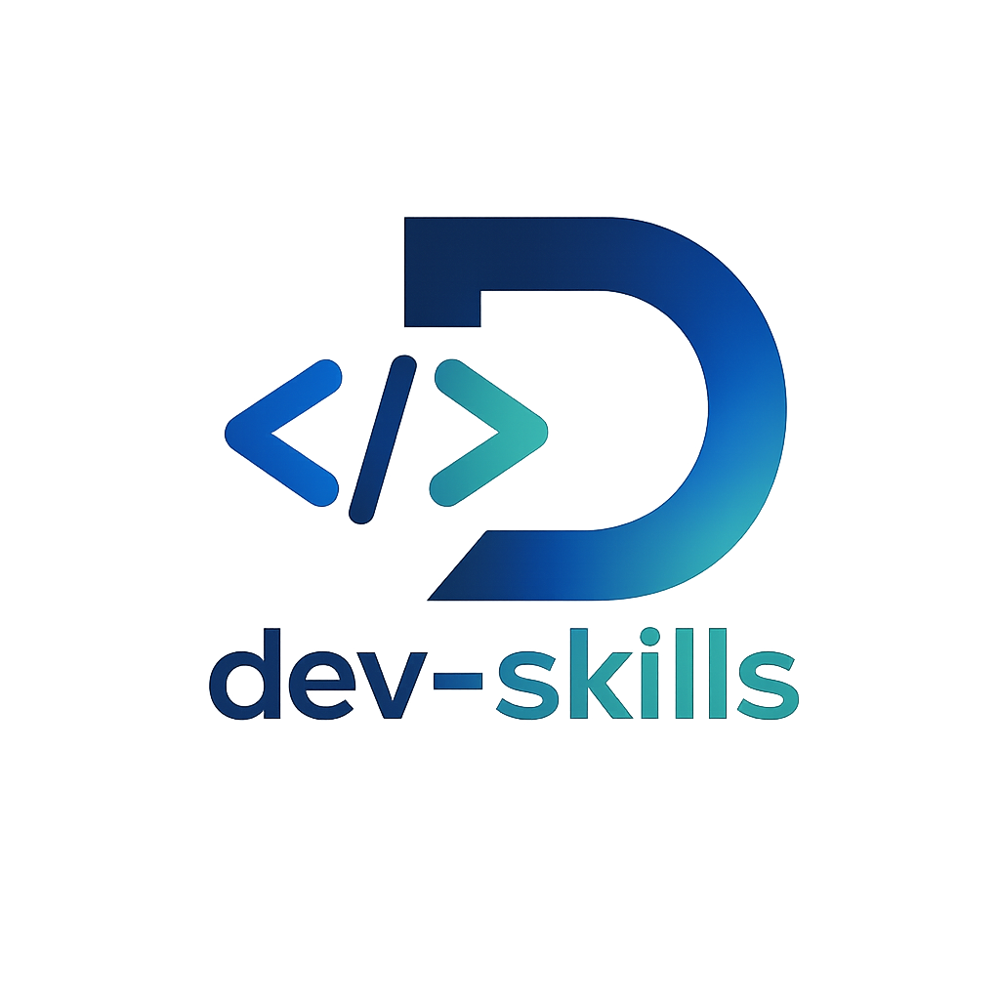

让 agent 先判断路径
当你只知道目标,但不知道该先写需求、计划还是直接修复时,从这里开始。
- dev-auto

dev-skillsAI development workflow skills
dev-skills 为 Claude Code 与 Codex 提供 11 个工程流程 skill 和精简 always-on 团队规则,用轻量 SDD 让设计上下文、需求拷问、spec、plan、实现、验证、评审与收尾都有清晰边界和可复核结果。
$ codex
> 做一个登录页,别直接开写,先帮我收敛一下
收到。我先把需求落成 spec:
- 目标:谁在什么产品场景里登录
- 范围:登录方式、错误态、移动端、无障碍
- 不做:注册、找回密码、SSO,除非你确认
如果复杂度升高,我会再补 plan / ADR。实现、验证和 review 都会回到这份 artifact 对齐。Skill library
日常只要回答“现在卡在哪一步”。dev-skills 会把需求、方案、实现、修复、验证和提交收进同一条 SDD 工程流程。
当你只知道目标,但不知道该先写需求、计划还是直接修复时,从这里开始。
优先用 dev-grill-docs 对齐需求、边界和验收条件,生成 spec artifact;dev-spec 只作为 spec-only 兼容入口,复杂或高风险改动再补 plan。
新功能走 TDD;问题修复从复现和 root cause 开始,避免只修表面症状。
完成声明必须有证据;提交前检查 diff。只需要 message 时再单独使用 commit writer。
Articles
Install and upgrade
选择你的入口,复制对应命令。升级 skill 不会自动覆盖项目里的短版团队规则模板;详细政策可参考或复制 `docs/team-policy.md`。
/plugin marketplace add https://github.com/Jason-chen-coder/dev-skills
/plugin install dev-skills首次安装后,如需团队规则,复制 `CLAUDE.md.template` 到项目根 `CLAUDE.md`;详细政策参考 `docs/team-policy.md`。
理解目标、判断当前卡点,决定该走 spec、plan、实现、修复还是验证。
模糊需求先落 spec;复杂或高风险改动再补 plan / ADR。
实现或修复时锁住行为,只按当前 artifact 和范围改代码。
完成前跑验证,提交前检查 diff、风险和夹带改动。
确认目标、选择 source artifact,整合所有子 agent 结果。
只读查调用链、相似实现、设计系统和已有约定。
只改分配范围内的页面、模块或测试,并引用对应 AC 或 plan step。
独立对照 artifact 检查命令证据、响应式、可访问性和 diff 风险。
Runtime preview
只保留高频 workflow 节点。切换 tab 查看代表性输入和输出;开启减少动效时直接显示完整文本。
$ codex
> 用 dev-auto 帮我串起来,下一步该做什么?━━━ Dev Auto ━━━
路径 : feature
复杂度 : moderate
下一步
$ dev-grill-docs user-export
为什么:先把模糊需求拆成可验证 spec。Workflow
Feature、Simple hotfix 和 Bug 三条路径最终都会汇合到 dev-verify、dev-code-review、git commit 和 dev-finish。
FAQ
Claude Code 使用 `.claude-plugin/` manifest;Codex 当前兼容方式是复制 `skills/*` 到 `$CODEX_HOME/skills`。
不会。skill 升级只更新 skill 文件,短版团队规则模板需要人工对比后同步;详细 policy 文档也建议按团队实际情况复制或改写。
前者解释四条 baseline 背后的失败模式,防止规则变口号;后者放详细团队治理,避免把 always-on 模板写得过长。
当你不知道下一步跑哪个 skill,或者需要从失败状态恢复时使用。它只建议,不调起其他 skill。
团队策略是 commit 前先 review。`dev-commit-writer` 只用于用户明确表示跳过 review 且只要 message 的场景。